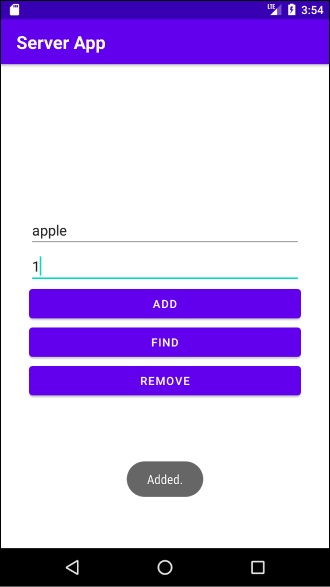

컨텐트 프로바이더(Content Provider)와 컨텐트 리솔버(Content Resolver)를 사용하면 다른 어플리캐이션의 데이터에 접근할 수 있습니다. 컨텐트 프로바이더가 정의된 앱을 서버 앱, 컨텐트 리솔버를 사용하는 앱을 클라이언트 앱이라고도 합니다. 데이터를 제공하는 앱에서는 컨텐트 프로바이더를 구현합니다. 데이터를 사용하는 앱에서는 getContentResolver()를 호출하여 컨텐트 리솔버 객체에 접근할 수 있습니다. 이 객체를 사용하여 다른 앱에 데이터를 추가, 변경, 삭제, 조회할 수 있습니다.
예제
다음과 같은 예제를 만들며 컨텐트 프로바이더와 컨텐트 리솔버에 대해 알아보겠습니다.
서버 앱에서는 데이터를 추가, 삭제, 탐색할 수 있습니다. 또한 컨텐트 프로바이더도 구현되어있습니다.
클라이언트 앱은 버튼을 누르면 컨텐트 리솔버를 사용하여 데이터를 조회합니다. 이후 토스트 메시지로 조회한 데이터의 개수를 보여줍니다.
overridefundelete(uri: Uri, selection: String?, selectionArgs: Array<String>?): Int { TODO("Implement this to handle requests to delete one or more rows") }
overridefungetType(uri: Uri): String? { TODO( "Implement this to handle requests for the MIME type of the data" + "at the given URI" ) }
overridefuninsert(uri: Uri, values: ContentValues?): Uri? { TODO("Implement this to handle requests to insert a new row.") }
overridefunonCreate(): Boolean { TODO("Implement this to initialize your content provider on startup.") }
overridefunquery( uri: Uri, projection: Array<String>?, selection: String?, selectionArgs: Array<String>?, sortOrder: String? ): Cursor? { TODO("Implement this to handle query requests from clients.") }
overridefunupdate( uri: Uri, values: ContentValues?, selection: String?, selectionArgs: Array<String>? ): Int { TODO("Implement this to handle requests to update one or more rows.") } }
ContentProvider클래스를 구현하면 위와 같이 여섯 개의 메소드를 오버라이딩 해야합니다.
또한 컨텐트 프로바이더는 안드로이드의 4대 컴포넌트 중 하나이므로 AndroidManifest.xml에 선언해야합니다.
enabled: 안드로이드 시스템에 의해 컨텐트 프로바이더의 인스턴스가 생성될 수 있는지 여부입니다. 이 값이 false면 시스템이 컨텐트 프로바이더 인스턴스를 생성할 수 없습니다. 따라서 값을 true로 설정합니다.
export: 다른 앱이 컨텐트 프로바이더를 사용할 수 있는지 여부입니다. 이 값이 false면 같은 앱에서만 컨텐트 프로바이더에 접근할 수 있습니다. 따라서 값을 true로 설정합니다.
authorities: 다른 앱이 컨텐트 프로바이더에 접근할 때 사용하는 주소입니다.
이제 컨텐트 프로바이더의 메소드를 하나씩 구현해봅시다.
(1) authority, URI 상수 정의
모든 컨텐트 프로바이더는 authority와 콘텐트 URI을 가지고 있습니다. authority값은 콘텐트 제공자 클래스 자신의 완전한 패키지 이름을 사용합니다. 콘텐트 URI는 앱에 따라 달라질 수 있습니다. 여기서는 데이터베이스 테이블 이름인 product로 구성하겠습니다.
1 2 3 4 5 6 7 8 9 10 11
classProductContentProvider : ContentProvider() {
val AUTHORITY = "com.yologger.sqlite.ProductContentProvider" val TABLE_PRODUCTS = "products" val CONTENT_URI = Uri.parse("content://$AUTHORITY/$TABLE_PRODUCTS")
val URL_MATCH_RESULT_PRODUCT = 1 val URL_MATCH_RESULT_PRODUCT_ID = 2
// ... }
(2) UriMatcher 구현하기
컨텐트 리솔버는 Uri객체를 통해 컨텐트 프로바이더에 접근합니다. 컨텐트 프로바이더에서는 UriMatcher를 통해 컨텐트 리솔버를 구분합니다.
when(uriType) { URL_MATCH_RESULT_PRODUCT -> { // 데이터베이스에 데이터 추가 id = db.insert(DBHelper.TABLE_PRODUCTS, null, values) } else -> { throw IllegalArgumentException("Unknown URI: ${uri}") } }
// 컨텐트 리솔버에 데이터 추가를 알림 requireContext().contentResolver.notifyChange(uri, null)
return Uri.parse("TABLE_PRODUCTS/${id}") }
(5) query()
클라이언트 앱이 데이터 조회를 요청하면 컨텐트 프로바이더의 query()가 호출됩니다. 우선 UriMatcher클래스를 사용하여 적절한 URI가 전달되었는지 확인합니다. 이후 데이터베이스를 조회하면 Cursor클래스의 인스턴스가 반환됩니다. 이를 query()메소드의 반환값으로 전달합니다.
overridefundelete(uri: Uri, selection: String?, selectionArgs: Array<String>?): Int { var uriType = uriMatcher.match(uri) var db = dbHelper.writableDatabase
overridefunupdate( uri: Uri, values: ContentValues?, selection: String?, selectionArgs: Array<String>? ): Int { var uriType = uriMatcher.match(uri) var db = dbHelper.writableDatabase var rowsUpdated = 0
val AUTHORITY = "com.yologger.sqlite.ProductContentProvider" val TABLE_PRODUCTS = "products" val CONTENT_URI = Uri.parse("content://$AUTHORITY/$TABLE_PRODUCTS")
val URL_MATCH_RESULT_PRODUCT = 1 val URL_MATCH_RESULT_PRODUCT_ID = 2
when (uriType) { URL_MATCH_RESULT_PRODUCT -> { val query = "SELECT * FROM ${DBHelper.TABLE_PRODUCTS}" var cursor = db.rawQuery(query, null) return cursor } else -> { throw IllegalArgumentException("Unknown URI") } } }
overridefunupdate( uri: Uri, values: ContentValues?, selection: String?, selectionArgs: Array<String>? ): Int { var uriType = uriMatcher.match(uri) var db = dbHelper.writableDatabase var rowsUpdated = 0
overridefundelete(uri: Uri, selection: String?, selectionArgs: Array<String>?): Int { var uriType = uriMatcher.match(uri) var db = dbHelper.writableDatabase
우선 액티비티에서 getContentResolver()를 호출하여 컨텐트 리솔버에 접근할 수 있습니다.
1 2 3 4
buttonQuery.setOnClickListener { val resolver = getContentResolver() // ... }
컨텐트 리솔버는 Uri클래스를 사용하여 서버 앱을 탐색합니다. 따라서 다음과 같이 Uri클래스의 인스턴스를 생성합니다.
1 2 3 4 5 6 7 8
buttonQuery.setOnClickListener {
val resolver = getContentResolver()
val AUTHORITY = "com.yologger.sqlite.ProductContentProvider" val TABLE_PRODUCTS = "products" val CONTENT_URI = Uri.parse("content://${AUTHORITY}/${TABLE_PRODUCTS}") }
컨텐트 리솔버의 query()를 호출하여 데이터를 조회합니다. 이 메서드를 호출하면 컨텐트 프로바이더의 query()가 호출되며, 5개의 인자를 필요로 합니다.
인자
설명
첫 번째 인자 uri
컨텐트 프로바이더의 주소
두 번째 인자 projection
어떤 열(Column)을 조회할 지 지정
세 번째 인자 selection
어떤 행(Row)만 조회할 지 지정하는데 사용하며 SQL문의 WHERE절과 동일
네 번째 인자 selectionArgs
어떤 행(Row)만 조회할 지 지정하는데 사용하며 SQL문의 WHERE절과 동일
다섯 번째 인자 sortOrder
정렬과 관련 있으며 SQL문의 ORDER BY와 동일
우리는 조건 없이 모든 데이터를 조회할 것이므로 다음과 같이 query()를 호출합니다.
1 2 3 4 5 6 7 8 9
buttonQuery.setOnClickListener {
val resolver = getContentResolver() val AUTHORITY = "com.yologger.sqlite.ProductContentProvider" val TABLE_PRODUCTS = "products" val CONTENT_URI = Uri.parse("content://${AUTHORITY}/${TABLE_PRODUCTS}")
var cursor = contentResolver.query(CONTENT_URI, null, null, null, null) }
Cursor 객체에서 데이터의 개수를 읽어 토스트 메시지에 출력합니다.
1 2 3 4 5 6 7 8 9 10 11 12
buttonQuery.setOnClickListener {
val resolver = getContentResolver() val AUTHORITY = "com.yologger.sqlite.ProductContentProvider" val TABLE_PRODUCTS = "products" val CONTENT_URI = Uri.parse("content://${AUTHORITY}/${TABLE_PRODUCTS}")
var cursor = contentResolver.query(CONTENT_URI, null, null, null, null) val count = cursor?.count Toast.makeText(this, "Count: ${count}", Toast.LENGTH_SHORT).show()
}
실행
우선 컨텐트 프로바이더가 포함된 서버 앱을 실행합니다. 다음과 같이 데이터 한 개를 추가합니다.  컨텐트 리솔버가 포함된 클라이언트 앱을 실행합니다.
버튼을 누르면 서버 앱에서 데이터를 읽어와 토스트 메시지에 개수를 출력합니다.
연락처 앱
안드로이드에 내장된 연락처 앱에는 연락처 데이터가 저장되어 있습니다. 클라이언트 앱에서는 컨텐트 리솔버를 사용하여 연락처 데이터를 읽어올 수 있습니다. 연락처 앱에 컨텐트 프로바이더가 구현되어있기 때문입니다.